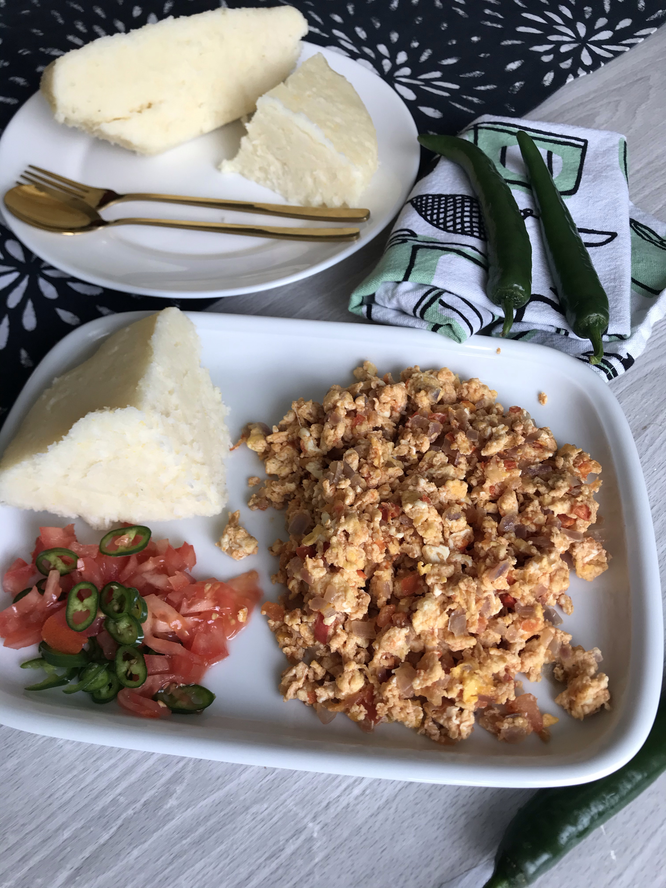

Best Ugali Mayai Recipe in Kenya

This is a very common dish esp among young people. It is easy to make and affordable
Ingredients
- Maize Flour
- 3 Eggs
- 1 Large Onion
- 2 Tomatoes
Process
- In boiling water add the maize flour and mix until it is firm
- Once it has formed a crust at the bottom, your ugali is ready
- In a pan with hot oil add your chopped onion
- Once the onion is browned, add your tomatoes
- Add your beaten eggs to the tomatoes and mix till they all come together
- Serve and plate while hot.